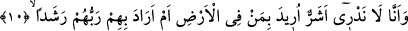

kasdedilen melekler olmuş olurlar.
“Rasad” kelimesini -dilbilgisi kurallarına göre- mef’ulün leh/sebeb bildiren tümleç
olarak kabul etmek mümkündür.
Bu âyet-i kerîmede şöyle bir işâret görüyoruz: Tabiî güçler, kalbin semâsına girmek
istiyorlar ve kalbî melekî ve rahmânî düşünce bekçileriyle dopdolu buluyorlar. Bu
düşünceler âdeta birer bekçi olup nefsânî ve şeytânî düşüncenin yollarını gözetleyip
bekliyorlar ve onların ardından Rabbın nûruyla aydınlanmış kalp nûrunun ateşiyle
onlara hücum ediyorlar.
Şeytanların alev huzmesi ile taşa tutulmaları Peygamber (s.a.) Efendimiz’in
peygamber olarak gönderilmesinden önce idi. Fakat onun peygamberliğinden sonra
şeytanların göğü dinlemeleri ve kulak hırsızlığı yapmaları çoğaldı ve bu iş o kadar arttı
ki artık insanların ve cinlerin dikkatini çeker oldu. Bunun ardından insanlar, ilâhî vahye
dayalı peygamber sözünü, göktekilerin sözlerini kulak hırsızlığı yaparak dinleyen
şeytanların sözlerinden beslenen kâhinlerin sözleri ile karıştırmasınlar diye göğe kulak
vermek ve kulak hırsızlığı yapmak kökünden engellendi. Bu söylediğimiz gerçeğe,
“fakat orasını güçlü bekçilerle, alevlerle doldurulmuş bulduk” ifâdesi işâret etmektedir.
Çünkü bu ifâde sonradan olanın kemal ve çokluk olduğuna delâlet etmektedir. Bir başka
ifâde ile gökyüzünün bekçilerle ve alev huzmeleri ile doldurulmuş olduğudur. Bu
durumda onlar: “Biz orada bekçilerden ve alev huzmelerinden uzak oturacak yerler
buluyorduk, hâlbuki şimdi oturulacak bütün yerler doldurulmuş” demiş oluyorlar. Cinler
bu gerçeği görünce: “Bu, Cenâb-ı Hakk’ın yeryüzündekiler için dilemiş olduğu yeni bir
durumdan başka bir şey değildir” demişlerdir. İşte bu sebeple şu onuncu âyetteki ifâdeyi
dile getirmişlerdir:
10. Bilmiyoruz, yeryüzündekilere kötülük mü murat edildi, yoksa Rableri onlara
bir hayır mı diledi?
“Bilmiyoruz” gökyüzü bizden korunmak sûretiyle “yeryüzündekilere kötülük mü
murâd edildi, yoksa Rableri onlara bir hayır mı” maslahatlarına daha uygun salah mı
“diledi.”
Bu âyet-i kerîmede yer alan “istifham/soru”, gökyüzünün kendilerine kapatılmasındaki
hikmeti anlamaktan âciz olduklarını göstermek için getirilmiştir. Bâzıları, “Belki de
tereddüdlerinin sebebi, gökten haber dinleyip kâhinlere bildirmekte bir fayda olduğunu
zannetmeleridir” demişlerdir. Ancak şu durum bu görüşün yanlışlığını ortaya
koymaktadır. Onlar semâdan aldıkları haberleri ifsâd için yalan ile karıştırıyorlardı.
Böyle bir şeyin hayır olabileceğini nasıl zannedebilirler!
Şerrin değil de hayrın Allah Teâlâ’ya nisbet edilmesi Kur’an’a has çok değerli